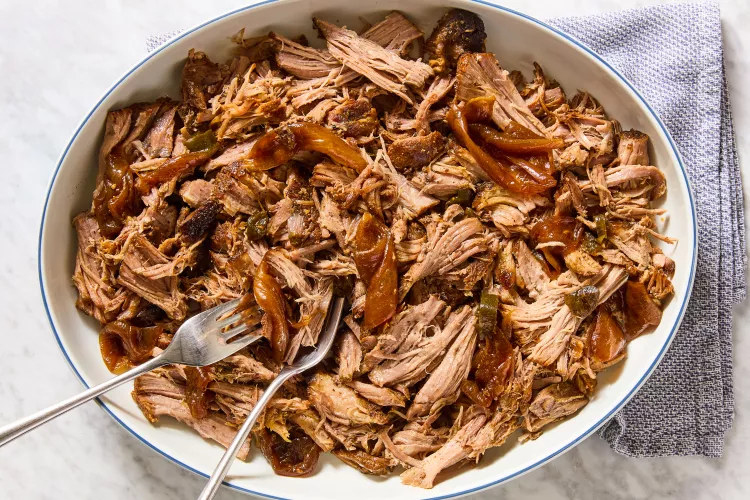

Pulled Pork

Recipe Overview
Ingredients
- 1/2 cup chicken broth
- 1/4 cup apple cider vinegar
- 1 small yellow onion, peeled and cut
- 3 tablespoons brown sugar
- 1 1/2 teaspoons smoked paprika
- 1 (4-pound) pork shoulder
Steps
- Place the broth, apple cider vinegar, jalapeño, and onion in the bottom of your slow cooker in an even layer
- Combine the brown sugar, pepper, salt, paprika, and garlic powder in a small bowl to make the dry rub
- Cover and cook on low until it easily pulls apart when you pierce it with a fork and twist, 8 to 9 hours
- Move the pork from the slow cooker to a platter and let rest for 20 minutes
- Remove any large fatty pieces and discard, if desired, then use two forks to shred the pork
- Add some of the juices, jalapeño, and onion to keep moist
- Serve with coleslaw on bread or by itself
Home Page